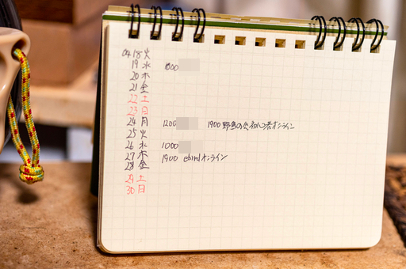
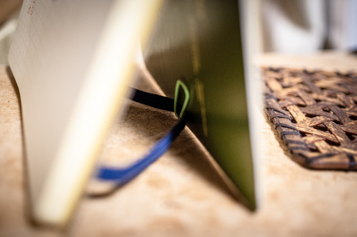
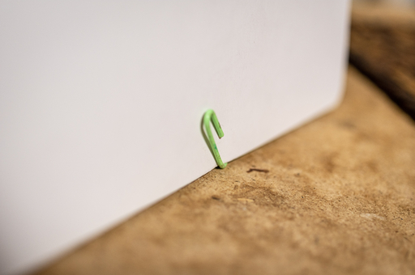

某 YouTuber がプチカスタムでロルバーンを立ててカレンダーのように使うことができると紹介していたので、便利そうなので早速取り入れてみた。

上の画像の通りカレンダーのページを常時立てた状態で開いている。この状態で眼の前にあるのでメモを取りたくなったら手を伸ばせば瞬時にメモをとることができる。
なおバレットジャーナルの影響で自分でカレンダーっぽいページを作っているが、自分は別にバレットジャーナルを書いているいるわけではない。あんな面倒なことはやってられない。
プチカスタムの方法は下の画像 2 枚を見ればわかる。ロルバーンのゴムを表紙にクリップで止めているだけだ。


メモをするときは普通にそのままメモ用紙のページを開けば良い。
このカスタムはもし家に使っていないクリップがころがっているなら費用がいっさいかからないところがよい。
いや自分はこんな貧乏くさい方法でリングノートを立たせたいのでなくスマートにてミドリのプラススタンドが使いたいんだ、って人を筆者は止めはしない。それどころか筆者もプラススタンドを買おうかと思っている。プロのデザイナーが設計したプロダクトはやっぱり美しい。